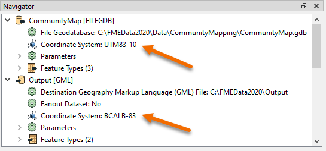
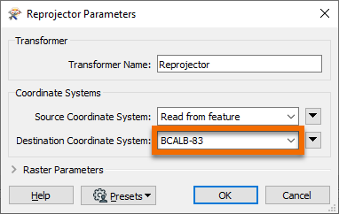

After completing this unit, you’ll be able to:
Spatial data can come in all shapes and sizes thanks to the wonderful world of coordinate systems. While having more options gives you the flexibility to do what you want, it also means that everyone else has more options to do what they want. And that can make things tricky.
When it comes to sharing or integrating spatial datasets, you’ll inevitably need to perform data transformation tasks that translate all the data you’re working with to use a common coordinate system. This is what’s called “reprojecting your data”.
Performing reprojections is one of the most common manipulations that need to happen when dealing with spatial data. While there are various ways to perform a reprojection, one of the easiest methods is using software that supports this function.
Data integration software like FME gives you the ability to perform reprojections alongside other transformation tasks. No matter what your situation is when it comes to using your data, FME has all the major reprojection tasks covered.
You can use FME to:
Each reader and writer within FME can be assigned a coordinate system. That coordinate system is set in the Navigator window of Workbench or the Generate Workspace dialog.
Like the source schema, the reader coordinate system is "what we have" and the writer coordinate system is "what we want". Here the source coordinate system has been defined as UTM83-10 and the destination as BCALB-83:

Each feature processed by the reader is tagged with the coordinate system defined in its parameter.
When a feature arrives at a writer, if it is tagged with a different coordinate system to what is defined for that writer, then FME automatically reprojects the data, so that the output is in the correct location.
It's not always necessary to set the coordinate system parameters manually. Some data formats (for example Esri Shapefile) are capable of storing information about the coordinate system in which they are held, and FME will retrieve this information where it can.

Here, because the reader coordinate system is marked <not set>, FME will try to determine the coordinate system from the source dataset. If it can't, then the feature will be tagged with a coordinate system of <unknown>.
There are a number of reprojection scenarios that may occur depending on the combination of coordinate system (CS) information available. Here N means "not set" and S means "set":
| Dataset CS | Reader CS | Writer CS | Reprojection |
| N | S | S | Reprojects from Reader CS to Writer CS |
| S | N | S | Reprojects from Dataset CS to Writer CS |
| N | N | S | Error: Cannot reproject without Dataset or Reader CS |
| S | S | S | Reprojects from Reader CS to Writer CS |
| S | S | N | No reprojection unless the format requires it |
If the coordinate system is not set on the writer, then no reprojection will take place unless the output format requires it. For example, the KML format requires data to be in Latitude/Longitude. If neither the source dataset or the reader coordinate system is defined, then the translation will fail.
There are two ways to change the coordinate system of your data using FME:
If you set your writer to use your desired coordinate system as explained above, your data will be reprojected just before being written.
If you instead need to reproject data in the middle of a translation, you can use a projection transformer. The most popular is the Reprojector transformer. Simply connect your data to the input port of this transformer and select your desired coordinate system.

You might use this transformer if you want to both read and write data using a geographic coordinate system, but need to conduct spatial analysis during your translation. Perhaps you need to buffer points or calculate an area. As you learned from the last unit, spatial analysis should only be conducted using projected coordinate systems.